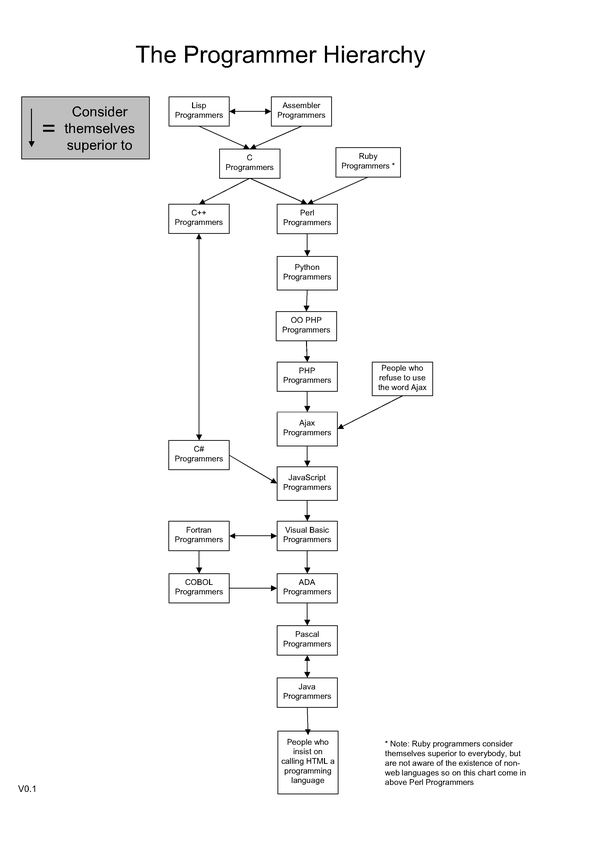

POSTS 프로그래머 계층도 - 자바 프로그래머는 자신들이 'html을 프로그래밍 언어라고 주장하는 사람들'보다 우월하다고 생각한다. June 27, 2009 흥분하지 말고, 그냥 재미로 보자  (원본 : http://lukewelling.com/2006/08/03/java-programmers-are-the-erotic-furries-of-programming/)